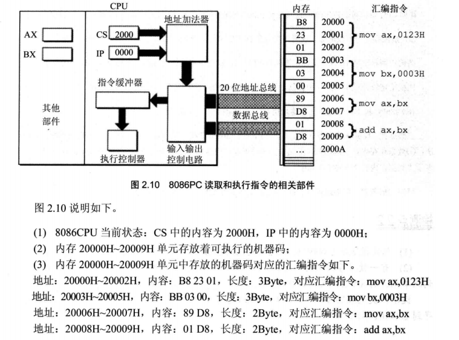

2.3 汇编基础：段与段寄存器
写在课前
CPU 寻址时需要依赖 段寄存器 ，使用偏移寻址方式。
CPU 对内存的分段管理
实际上， 内存中并不存在段的概念。段的划分完全来自 CPU，由于 8086 系列 CPU 采用 “段基地址 × 16 + 偏移地址 = 实际物理地址” 的方法给出内存单元的物理地址，使得我们可以使用分段的方式来管理内存。举一个例子：10000H~100FFH 的内存单元组成一个段，该段起始地址为 10000H、大小为 100H，即将若干地址连续的物理内存单元看作一个段，利用起始地址定位段开头，利用偏移地址定位段中的内存单元。
段寄存器：CS, IP, DS, SS
CS：是 Code Segment 的缩写，翻译为“代码段寄存器”，对应于内存中的存放代码的内存区域，用来存放内存代码段区域的入口地址（段基址）。 DS：是 Data Segment 的缩写，翻译为“数据段寄存器”； SS：是 Stack Segment 的缩写，翻译为“堆栈段寄存器”； ES：是 Extra Segment 的缩写，翻译为“附加段寄存器”。
在CPU执行指令时，通过代码段寄存器（CS，Code Segment）和指令指针寄存器（IP，Instruction Pointer）来确定要执行的下一条指令的内存地址。
修改 CS, IP 的指令
8086 读取和执行指令的相关过程

在 8086 机器中，任意时刻， 设 CS 中内容为 M，IP中的内容为 N， 8086 CPU 将从 M × 16 + N 单元开始，读取一系列连续内存单元中存放的机器码，执行对应的一条或多条指令，故起始地址一定为 16 的倍数。
以图片为例：传入 CS : IP = 2000H : 0000H ，传入地址加法器之后，得到 2000H * 16 + 0000H = 20000H 为真实物理地址。接下来将 20000H 送入 20位地址总线，在内存中找到对应地址，取回一条指令 B8 23 01 ，通过数据总线送入 CPU 的 IR 缓冲寄存器。因当前的读入的指令 B8 23 01 长度为三个字节，所以接下来 IP += 3 。CPU 内的执行控制器读取需要的数据，并传给 ALU 完成指定运算操作。重复上述过程，直至指令执行完毕。
8086 CPU 启动时，CS 和 IP 默认设置为 FFFFH : 0000H，所以 FFFF0H 为开机后执行的第一条指令。
修改 CS 、IP
CPU 中，程序员可以直接用指令读写的内部部件只有寄存器，程序员可以通过修改寄存器的内容实现对 CPU 的控制，CS、IP 作为控制 CPU 执行目标程序的寄存器也不例外。
MOV 指令，可以吗？
常见的修改寄存器指令之一就是 MOV 指令， 例如 MOV AX,123 。显然，我们也可以用 MOV 指令来改变大部分寄存器的值，我们把 MOV 称为传送指令。
原因 （待确认 ）：8086 CPU 没有提供类似功能
In protected mode the segment registers don't directly point to memory, they refer to a descriptor table entry instead which only the OS can configure. The Table sets the base address and limit that should be used when accessing memory through that segment register.
This means that segments aren't swapped around nearly as often (typically there's 1 valid CS and a couple of valid data segments), so there's little point in providing specialized move instructions for them.
关于原因，另一说是当 CPU 运行在保护模式下段寄存器并没有直接指向内存，而是指向一个对应的描述符表入口，这个描述符设定了段基址并限制了通过段寄存器能访问到的内存。所以 CS 寄存器难以被这类类似于拷贝数据的指令修改。
JMP 指令，可以吗？
Usually you change
cswith ajmp(long jump),call(long call),retf,int3,intoriret. In 8088 and 8086pop csis also available (opcode 0x0F).pop cswon't work in 186+, in which the opcode 0x0F is reserved for multibyte instructions.
包括 JMP 在内，CALL RETF INT3 INT IRET (Even POP) 可以用来被修改 CS 和 IP 的值，我们把这些指令称之为 转移指令。
具体修改方法（以JMP 为例）：
| 指令示例 | 具体示意 |
|---|---|
| JMP 2E3H:003H | 用 2E3H 替换 CS 中的基址，用 0003H 替换 IP 中的偏移地址 |
| JMP AX | 用 AX 中的值修改 IP 中的偏移地址 |
思考题
- CPU 如何从 内存 中读取指令并执行？此时是否一定涉及 CS 和 IP 的读写？
- CPU 如何判断对应内存单元中保存的信息是数据还是指令？